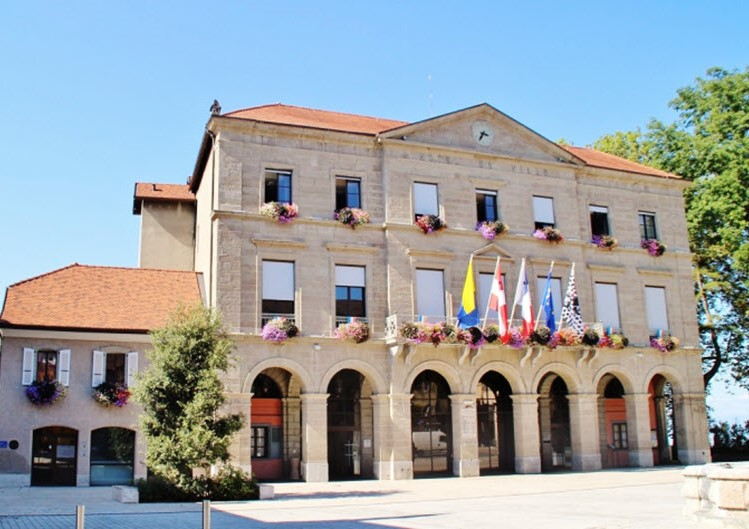

Adresse : 1 Place de l'Hôtel de ville, 74200 Thonon-les-Bains
Construit en 1821, l'Hôtel de Ville de Thonon est un très joli bâtiment fleuri surplombant le Lac Léman. Pour la petite histoire, c'est là que se sont mariés Monique et Jacques (les parents de Célia) en 1976.
La cérémonie débutera à 15h, nous vous donnons rendez-vous à 14h30 sur le parvis. Prenez de la marge pour vous garer et marcher jusqu'à la mairie.
La mairie ne possède pas de parking visiteurs, cependant les places ne manquent pas aux alentours. Attention le stationnement est payant le samedi (entre 1€ et 2€ de l'heure selon la zone, limité à 2 heures).
Une autre option est de se garer dans l'un des trois parkings sous-terrain proches (5 minutes à pieds):
Plus d'information concernant le stationnement sur le site de la ville de Thonon.